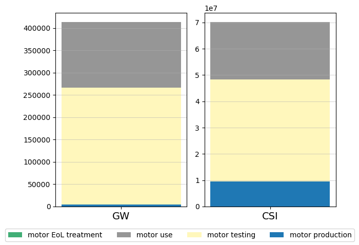

# Brightway
import bw2data as bd
import bw2io as bi
import bw2calc as bc
import bw2analyzer as bwa
# Others
import pandas as pd
import matplotlib.pyplot as pltThis notebook has been developed to show how coding with brightway while still using the Activity Browser looks like.
More information on the seminars can be found here.
Importing packages
Open a project and a database
bd.projects.set_current("brightway2_test")motor_db = bd.Database("motor_case")After modelling on the AB
Selection of impact assessment methods
Global warming EF 3.1:
gw_method = ('EF v3.1', 'climate change', 'global warming potential (GWP100)')Crustal scarcity indicator:
csi_method = [method for method in bd.methods if "Crustal" in str(method)][0]Selection of functional unit
# Value of the lifetime
lifetime = 20 #yearsfunctional_unit = {motor_db.get("motor EoL treatment"): 1/lifetime}Impact assessment
def lca_results(fu, list_methods):
list_units = [bd.methods.get(method)["unit"] for method in list_methods]
lca = bc.LCA(demand=fu, method=list_methods[0])
lca.lci()
lca.lcia()
list_scores = [lca.score]
for method in list_methods[1:]:
lca.switch_method(method)
lca.lcia()
list_scores.append(lca.score)
return pd.DataFrame({"score": list_scores, "unit": list_units, "method": list_methods})lca_results(functional_unit, [gw_method, csi_method])| score | unit | method | |
|---|---|---|---|
| 0 | 4.136072e+05 | kg CO2-Eq | (EF v3.1, climate change, global warming poten... |
| 1 | 7.013956e+07 | kg Si-Eq | (Crustal Scarcity Indicator 2020, material res... |
Figures
Generate the data to be plotted
def table_recursive_multi_calculation_dbcut(activity, lcia_methods, amount=1, level=0, max_level=3, db_activity='motor_case', db_cut=['ecoinvent', 'biosphere']):
"""
Returns a table (DataFrame) with the contribution tree for a given activity and various LCIA methods.
The contribution tree does not contain activities if they are from a database in db_cut (to avoid
having details on ecoinvent datasets and to stay in my own model) and has the maximum level max_level.
Columns for the returned table: level, activity, database, and str(method) for all LCIA method explored.
"""
lca_score = lca_results({activity: amount}, lcia_methods)
table = pd.DataFrame([[level, activity["name"], db_activity]+ list(lca_score["score"])], columns=["level", "activity", "database"]+[str(m) for m in lcia_methods])
if level < max_level:
for exc in activity.technosphere():
db_exc = exc.input['database']
go_forward = True
for stop_word in db_cut:
if stop_word in db_exc:
go_forward = False
if go_forward:
table = pd.concat([table, table_recursive_multi_calculation_dbcut(
activity=exc.input,
lcia_methods=lcia_methods,
amount=amount * exc['amount'],
level=level + 1,
max_level=max_level,
db_activity = db_exc
)], ignore_index=True)
return tabletable_results = table_recursive_multi_calculation_dbcut(
activity = motor_db.get("motor EoL treatment"),
lcia_methods=[gw_method, csi_method],
amount = 1/lifetime,
max_level = 3
)Select characteristics for the figure
own_colors = {
"motor production":"#1f78b4", #blue
"motor use":"#969696", #gray
"motor EoL treatment": "#41ae76", #green
"motor testing":"#fff7bc" #yellow
}Figure generation
def basic_bar_chart(table_results, legend_x_axis, own_colors=own_colors):
table_figure = table_results.set_index(table_results["activity"])
number_methods = table_figure.shape[1] - 3
fig, ax = plt.subplots(1, number_methods)
x_axis = [0]
for n_fig, method in enumerate(table_figure.columns[3:]):
for activity in table_figure.index:
if n_fig == 0:
ax[n_fig].bar(
x_axis,
table_figure.loc[activity, method],
label=activity,
color=own_colors[activity]
)
else:
ax[n_fig].bar(
x_axis,
table_figure.loc[activity, method],
color=own_colors[activity]
)
fig.tight_layout()
for n_fig in range(number_methods):
ax[n_fig].grid(True, axis='y', linewidth=0.4)
ax[n_fig].set_xticks(x_axis)
ax[n_fig].set_xticklabels([legend_x_axis[n_fig]], fontsize=14)
fig.legend(loc='lower center', ncol=5)
plt.subplots_adjust(bottom=0.15)
return plt.show()basic_bar_chart(
table_results,
["GW", "CSI"]
)